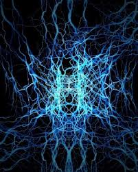
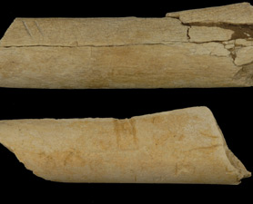

Notre dernière invention …
Aujourd'hui je vais parler d'un sujet assez différent de mes préoccupations habituelles mais qui renvoie sur l'évolution de notre espèce et notre avenir. Et le post va être long, je le sens. Mais je vais vous emmener tout en douceur de la savane africaine à Terminator donc … c'est un sacré trip. Accrochez vous !
Comme toutes les espèces vivantes, nous avons au fil du temps développé des stratégies pour maitriser notre milieu afin de maximiser nos chances de survie et de reproduction, y compris et surtout lors de changement de configuration du milieu. Tout ça s'est fait à l'insu de notre plein gré et personnellement je ne vois pas la main d'une créature supérieure, juste la mécanique simplissime et efficace de la sélection naturelle.
Pours des raisons que je n'expliquerai pas ici, certaines créatures vivantes évoluent « à la marge » et sans accroissement de complexité notable (tous les être unicellulaires, mais aussi les insectes qui ont des fonctionnements collectifs d'une très grande complexité mais évoluent très lentement).
Stromatolithe, 3,6 milliards d'années : aux origines de la vie
Les humains, c'est plutôt le mode « turbo ».
Le système nerveux, dont la fonction originelle était de permettre le mouvement, la conscience apparaissant bien plus tard, s'est développé chez nous de manière fulgurante ces dernières centaines de milliers d'années. Notre outil principal pour notre survie est notre intelligence.
Un morceau de système nerveux …
Intelligence qui nous a permis de développer des outils de plus en plus complexes, de nous installer dans des biotopes de plus en plus variés, que nous avons toujours massacrés allègrement, mais c'est un autre sujet: notre capacité à nous projeter dans un futur qui dépasse 2 ou 3 générations est pathétiquement limitée.
Les outils ont commencé par être des substituts/ compléments du corps, utilisés à des fins alimentaires et/ou de défense/attaque. Le premier outil retrouvé (à l'heure actuelle) est un os taillé, utilisé par Australopithécus Afarensis (Lucy pour les intimes) il y a 3,4 millions d'années, et utilisé pour découper de la viande, n'en déplaise à mes lecteurs végétal/riens.
Le couteau de Lucy
D'abord utilisés pour démultiplier la force musculaire (lancer un harpon, tirer une flèche, …), les outils ont fini carrément par la remplacer : domestication de l'animal qui devient un moyen de transport et outil de travail – et de conquête, puis carriole, puis automobile, etc …
Nous avons à peu près tout ce dont nous avons besoin en terme de remplacement de notre force physique et de réduction de tout ce qui est pénible : et on y réussit tellement bien que notre corps n'arrive pas à s'y adapter, ce qui est un paradoxe qui serait rigolo si il ne coutait pas de gazillions de monnaies diverses partout dans le monde .
Vous vous demandez sans doute où je veux en venir, parce que pour l'instant, ce que je dis est plutôt banal, et ressemble au générique de «The Big Bang Theory », que je recommande à tous.
On a parlé des muscles, est-ce qu'il ne va pas se passer la même chose, en pire, avec l'intelligence ?
Les premières machines à calcul (le boulier) ne sont pas « intelligentes » mais permettent de manipuler les nombres vite. L'invention de l'électricité, des composants électroniques et de l'algèbre de Boole (non, ce n'est pas l'inventeur du boulier :-)) permet le développement des premiers ordinateurs (notamment avec le brillantissime Alan Turing, sur lequel j'ai écrit un post il y a un bout de temps et qui était un sacré coureur de fond). Qui ne sont pas intelligents mais calculent vite, de plus en plus vite.

L'ancêtre commun de tous les ordinateurs : l'ENIAC
Isaac Asimov écrit ses premières nouvelles mettant en scène des robots au début des années 40 et formule les « trois lois » :
- Un robot ne peut porter atteinte à un être humain, ni, restant passif, permettre qu'un être humain soit exposé au danger.
- Un robot doit obéir aux ordres que lui donne un être humain, sauf si de tels ordres entrent en conflit avec la Première loi.
- Un robot doit protéger son existence tant que cette protection n'entre pas en conflit avec la Première ou la Deuxième loi.
La première conférence sur l'intelligence artificielle a lieu en 1956. Comme dans tous les domaines impliquant de la technologie, on va retrouver le célèbre « hype cycle » de Gartner.
J'ai eu quelques cours sur les systèmes experts lorsque je faisais mes études dans les années 80, mais l'idée que des ordinateurs seraient un jour aussi intelligents que des humains avait fait long feu.
Et puis la lecture du dernier livre de Kurzweil « How to create a mind » et les progrès en neurosciences rendent plus crédible que jamais (à mes yeux en tous cas, mais je n'ai pas l'impression d'être le seul) l'apparition de la singularité : le moment où les humains auront réussi à construire une machine plus intelligente qu'eux.
Il y a quelques points de repère notables. Un ordinateur a réussi à battre un humain aux échecs. A gagner à Jeopardy, jeu de culture générale et donc plus « humain » que les échecs. Et plus, sans qu'on s'en rende compte, les logiciels de reconnaissance de caractères et de reconnaissance vocale ont envahi notre environnement. Les algorithmes mis en œuvres dans ces logiciels sont très proches de ceux de notre cerveau, et en tout cas inspirés du fonctionnement « logique » du cerveau humain, mais sur une échelle « microscopique ».
Bon évidemment il y a un problème de puissance de calcul : pour l'instant un cerveau humain est plus puissant que tous ordinateurs branchés sur internet à un instant t.
Mais si la loi de Moore continue à s'appliquer, on devrait voir assez de puissance en 2025 ( !!!)
C'est amusant de parler à son iphone en utilisant Siri (il y a d'ailleurs un épisode de The Big Bang Theory totalement hilarant à où Raj essaye de draguer Siri). Mais insidieusement, sans révolution, notre dépendance vis à vis de la technologie est de plus en plus forte, et que se passera t'il lorsque la technologie en question sera plus intelligente que nous ?
Cette (très) longue intro pour présenter un livre qui vient de sortir : Our Final Invention de James Barrat.
Houla ? La fin du monde, et même pas de réchauffement climatique ou de guerre de religion mondiale à grand coup d'armes chimiques ? Voilà qui est rafraichissant ma foi.
Barrat a fait une synthèse des travaux de recherche en cours et d'après le rédacteur de Kurweilai.net, spécialiste du sujet, ne sombre pas dans le sensationnalisme mais fait un panorama complet des connaissances actuelles et en tire quelques conclusions, assez pessimistes, que je vous livre :
Explosion de l'intelligence, mais pas la notre.
Nous avons été capables de créer des machines qui sont meilleures que nous à certaines tâches (échecs). Probablement que dans le courant du siècle nous pourrons créer des machines qui sont aussi compétentes en intelligence artificielle que nous. Et qui donc pourront augmenter leurs propres capacités dans des proportions qui vont complètement nous dépasser. Donc en quelques jours, semaines ou décennies, devenir plus intelligentes que nous avec un facteur de magnitude qui pourrait être comparable à la différence entre un humain et une souris … ou un ver nématode (302 neurones au compteur).
Perte de contrôle.
La différence qualitative qu'apporte le fait d'être l'espèce la plus intelligente. Les humains contrôlent leur destin (enfin, ils essayent) parce qu'ils sont plus intelligents que les autres espèces. Une fois que nous avons crée des machines plus intelligentes que nous, c'est elles qui contrôleront leur destin … et le notre. Il n'est pas possible de mettre une intelligence sous contrainte de manière indéfinie – c'est comme si des chimpanzés essayaient de mettre des humains dans une cage en bambou. Et si une espèce d'intelligence nettement supérieure à nous à des objectifs différents des notres, nous sommes un peu cuits (regardons ce que nous faisons avec les animaux).
Pas de garantie de bonne fin.
Une intelligence supérieure n'implique pas nécessairement une bienveillance supérieure (on a vu ça souvent chez les humains !!!). L'intelligence est la capacité d'atteindre son but dans un environnement complexe et changeant. Ca s'applique sur n'importe type de but – et donc pas nécessairement les nôtres.
La fin justifie les moyens.
Des objectifs « finaux » passent forcément par des moyens et donc des objectifs intermédiaires. Si un objectif final est que tous les être vivants dans la galaxie soient heureux, il faut d'abord avoir plein de ressources, savoir se protéger, etc. Les machines super-intelligentes peuvent être dangereuses non pas parce qu'elles vont nous vouloir du mal, mais plutôt parce qu'elles sont susceptibles de nous utiliser comme ressources pour atteindre leurs objectifs.
Complexité des valeurs humaines. Les chercheurs en psychologie cognitive ont montré que nous nous sommes pas uniquement soucieux de notre plaisir immédiat, mais que nos cerveaux fonctionnent avec des règles complexes et dont nous n'avons pas forcément conscience. Du coup il est difficile d'imaginer coder ces valeurs dans un programme, et si on essaye de le faire, on va probablement rater quelque chose.
Fragilité et non-linéarité des valeurs humaines. Certaines caractéristiques de nos valeurs font que si nous oublions un détail tout tombe par terre. Exemple : si nous demandons à des machines super-intelligentes de nous faire un monde dans lequel il y a tout ce qui est important pour nous mais que que nous oublions le critère « nouveauté », nous allons nous retrouver dans un monde qui recommence sans arrête comme « eternal sunshine of the spotless mind ». Ou si on oublie de spécifier que la conscience de ce que nous faisons est importante, un monde ou tout baigne mais personne ne s'en rend compte.
Bon tout ça n'est pas très rose, ça craint carrément, mais ça change un peu de ce qu'on entend à la radio, non ?
Ce n'est pas complètement nouveau, Bill Joy, un des confondateurs de Sun Microsystems, avant déjà écrit en 2000 un article assez glaçant sur le thème « pourquoi le futur n'a pas besoin de nous » qui traite des mêmes problématiques. Il vaut le coup.
Ca renvoie sur des questions très transversales, qui concernent à la fois les philosophes, les mathématiciens, les informaticiens, et les économistes. En l'occurrence, ce sont des sujets sur lesquels nous n'avons pas tellement de prise en tant qu'individus non spécialistes du sujet. Peut être plus en tant que citoyens, mais d'ici que les politiques s'emparent du sujet, il risque de couler de l'eau sous les ponts.
Mais comme pour tout, en avoir conscience évite de se faire prendre par surprise, même si nous sommes globalement consentants.
Ma vision personnelle avant de tomber là dessus était plutôt un futur en coévolution avec les machines. Prothèses, extensions, il n'y à pas de raison que les fonctions clé comme la reproduction et l'intelligence ne soient pas touchées par les avancées technologiques. L'envie de reproduction m'a passé :-), mais pouvoir absorber une énorme quantité de savoir en quelques instants m'a toujours fait fantasmer, être plus intelligent aussi (!!!) et certaines expérience de « cerveau augmenté » ont déjà été faites avec des rats donc on y arrivera avec les humains un de ces jours.
Déjà d'une certaine manière, je sens bien comme internet est un «accélérateur de savoir » de part les échanges qu'il permet et l'accès immédiat au savoir.
La suite logique c'est donc des humains « augmentés » avec différents objets technologiques qui complémentent et amplifient nos capacités. Entre les nano-technologies, le « wearable computing » et le fait de pouvoir commencer à imaginer des ordinateurs « biologiques », la frontière va être de plus en plus ténue.
Nous vivons déjà en symbiose avec des milliards de bactéries, et au plus profond de nos cellules les mitochondries sont à l'origine des corps étrangers qui se sont intégrées dans des bactéries pour faire les premières cellules eukaryotes. L'idée de coévolution n'est pas nouvelle et partie intégrante du vivant.
Sauf que là nous allons co-évoluer avec des objets que nous aurons créé nous mêmes …et peut-être perdre totalement le contrôle de ce qui nous arrive parce que nous aurons développé des machines avec un QI de 5000 – ou de 50.000.
Peut-être que ce sera super parce que tous les problèmes qui nous polluent seront réglés…
Quid d'une existence sans contraintes? Dans un monde où chacun a ce dont il a besoin, un hobby qui lui convienne et les ressources dont il a besoin (ça sonne pas comme une utopie marxiste un peu, ça ?), que devient le sens de la vie ? Qui, pour tous les organismes vivants, est une bataille perpétuelle pour accéder à l'énergie nécessaire à la survie et se reproduire ?
Ou peut être (et plus probablement) que cette intelligence supérieure créée par nous nous traitera comme nous traitons les autres espèces moins intelligentes que nous: comme des ressources, et avec un soupçon d'empathie – et dans un état de dépendance totale.
Bon. Tout ça est un peu vertigineux pour un dimanche soir, et un peu compliqué pour un geek paléo comme moi, pour le coup pris en plein grand écart intellectuel entre mon modèle « mieux comprendre le passé pour gérer correctement l'avenir » et mon intérêt pour la démarche scientifique, que j'estime être la meilleure invention humaine – jusqu'à quand ?
Comme dirait notre vieil ami Nietsche : « Donc, la foi en la science, cette foi qui est incontestable, ne peut pas avoir tiré son origine d'un calcul d'utilité, au contraire elle s'est formée malgré la démonstration constante de l'inutilité et du danger qui résident dans la « volonté de vérité », dans « la vérité à tout prix » »
Je vais continuer tranquillement à rester connecté à la nature, à courir à moitié à poil dans les bois et à essayer de comprendre comment mon organisme fonctionne, en espérant le garder en bon état le plus longtemps possible.
Pt'être faire un stage de survie en forêt aussi … en attendant d'avoir le nouvel iPhone et de tester la nouvelle version de Dragon Dictate pour aller plus vite pour écrire des articles sur le blog
Avant que mon ordi ne s'éteigne tout seul en me disant d'aller au lit parce que je ne vais pas avoir assez de sommeil. Ou reprogramme mon cortex pour m'utiliser comme carte mémoire additionnelle
Hasta la vista, baby !